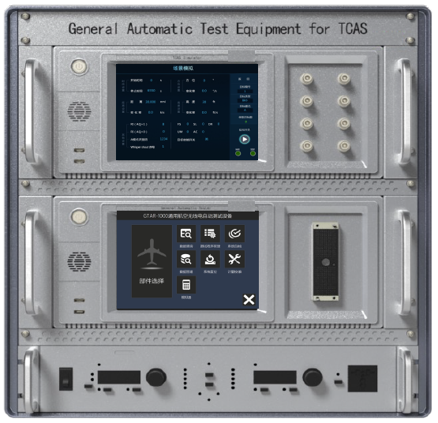
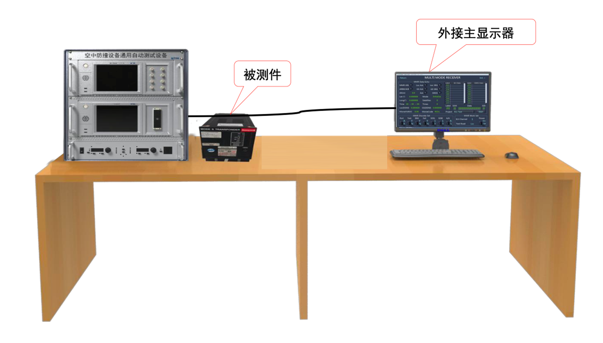

GTCA-1000
TCAS Automatic Test System
GTCA-1000 is an automatic test equipment designed for airborne TCAS systems.
The system integrates an automatic tester, TCAS simulator, and programmable AC power supply into one unified platform.
It supports development, debugging, factory acceptance, routine maintenance, and repair testing for TCAS equipment.
The software platform enables TPS development and execution based on CMM requirements, ensuring compliance with standard maintenance procedures.
Mature TPS libraries allow fast deployment, significantly improving testing efficiency for MRO and engineering applications.
GTCA-1000 Test System

System Configuration (TUA Setup)
